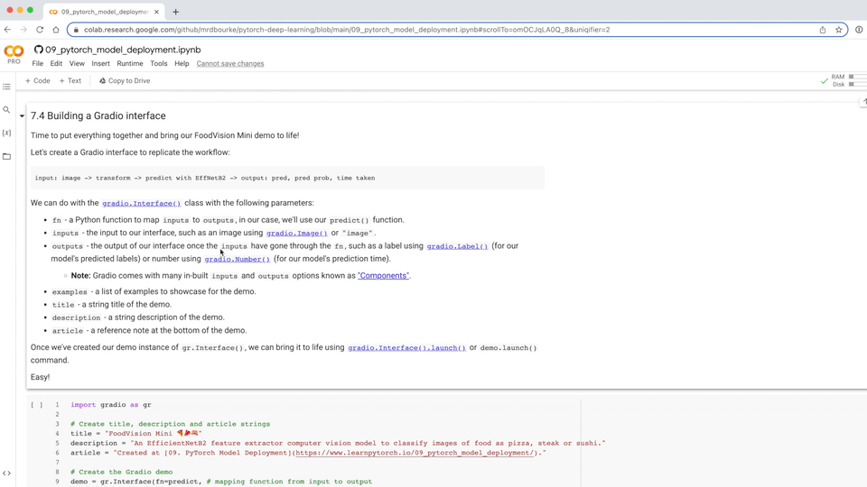

Machine learning model deployment is the process of making your machine learning model accessible to someone or something else.
Someone else being a person who can interact with your model in some way.
For example, someone taking a photo on their smartphone of food and then having our FoodVision Mini model classify it into pizza, steak or sushi.
Something else might be another program, app or even another model that interacts with your machine learning model(s).
For example, a banking database might rely on a machine learning model making predictions as to whether a transaction is fraudulent or not before transferring funds.
Or an operating system may lower its resource consumption based on a machine learning model making predictions on how much power someone generally uses at specific times of day.
These use cases can be mixed and matched as well.
For example, a Tesla car’s computer vision system will interact with the car’s route planning program (something else) and then the route planning program will get inputs and feedback from the driver (someone else).
Machine learning model deployment involves making your model available to someone or something else. For example, someone might use your model as part of a food recognition app (such as FoodVision Mini or Nutrify). And something else might be another model or program using your model such as a banking system using a machine learning model to detect if a transaction is fraud or not.
11.2 Why deploy a machine learning model?
One of the most important philosophical questions in machine learning is:
Deploying a model is as important as training one.
Because although you can get a pretty good idea of how your model’s going to function by evaluting it on a well crafted test set or visualizing its results, you never really know how it’s going to perform until you release it to the wild.
Having people who’ve never used your model interact with it will often reveal edge cases you never thought of during training.
For example, what happens if someone was to upload a photo that wasn’t of food to our FoodVision Mini model?
One solution would be to create another model that first classifies images as “food” or “not food” and passing the target image through that model first (this is what Nutrify does).
Then if the image is of “food” it goes to our FoodVision Mini model and gets classified into pizza, steak or sushi.
And if it’s “not food”, a message is displayed.
But what if these predictions were wrong?
What happens then?
You can see how these questions could keep going.
Thus this highlights the importance of model deployment: it helps you figure out errors in your model that aren’t obvious during training/testing.
We covered a PyTorch workflow back in 01. PyTorch Workflow. But once you’ve got a good model, deployment is a good next step. Monitoring involves seeing how your model goes on the most important data split: data from the real world. For more resources on deployment and monitoring see PyTorch Extra Resources.
11.3 Different types of machine learning model deployment
Whole books could be written on the different types of machine learning model deployment (and many good ones are listed in PyTorch Extra Resources).
And the field is still developing in terms of best practices.
But I like to start with the question:
“What is the most ideal scenario for my machine learning model to be used?”
And then work backwards from there.
Of course, you may not know this ahead of time. But you’re smart enough to imagine such things.
In the case of FoodVision Mini, our ideal scenario might be:
Someone takes a photo on a mobile device (through an app or web broswer).
The prediction comes back fast.
Easy.
So we’ve got two main criteria:
The model should work on a mobile device (this means there will be some compute constraints).
The model should make predictions fast (because a slow app is a boring app).
And of course, depending on your use case, your requirements may vary.
You may notice the above two points break down into another two questions:
Where’s it going to go? - As in, where is it going to be stored?
How’s it going to function? - As in, does it return predictions immediately? Or do they come later?
When starting to deploy machine learning models, it’s helpful to start by asking what’s the most ideal use case and then work backwards from there, asking where the model’s going to go and then how it’s going to function.
11.3.1 Where’s it going to go?
When you deploy your machine learning model, where does it live?
The main debate here is usually on-device (also called edge/in the browser) or on the cloud (a computer/server that isn’t the actual device someone/something calls the model from).
Both have their pros and cons.
Deployment location
Pros
Cons
On-device (edge/in the browser)
Can be very fast (since no data leaves the device)
Limited compute power (larger models take longer to run)
Privacy preserving (again no data has to leave the device)
Limited storage space (smaller model size required)
No internet connection required (sometimes)
Device-specific skills often required
On cloud
Near unlimited compute power (can scale up when needed)
Costs can get out of hand (if proper scaling limits aren’t enforced)
Can deploy one model and use everywhere (via API)
Predictions can be slower due to data having to leave device and predictions having to come back (network latency)
Links into existing cloud ecosystem
Data has to leave device (this may cause privacy concerns)
There are more details to these but I’ve left resources in the extra-curriculum to learn more.
Let’s give an example.
If we’re deploying FoodVision Mini as an app, we want it to perform well and fast.
So which model would we prefer?
A model on-device that performs at 95% accuracy with an inference time (latency) of one second per prediction.
A model on the cloud that performs at 98% accuracy with an inference time of 10 seconds per per prediction (bigger, better model but takes longer to compute).
I’ve made these numbers up but they showcase a potential difference between on-device and on the cloud.
Option 1 could potentially be a smaller less performant model that runs fast because its able to fit on a mobile device.
Option 2 could potentially a larger more performant model that requires more compute and storage but it takes a bit longer to run because we have to send data off the device and get it back (so even though the actual prediction might be fast, the network time and data transfer has to factored in).
For FoodVision Mini, we’d likely prefer option 1, because the small hit in performance is far outweighed by the faster inference speed.
In the case of a Tesla car’s computer vision system, which would be better? A smaller model that performs well on device (model is on the car) or a larger model that performs better that’s on the cloud? In this case, you’d much prefer the model being on the car. The extra network time it would take for data to go from the car to the cloud and then back to the car just wouldn’t be worth it (or potentially even impossible with poor signal areas).
Back to the ideal use case, when you deploy your machine learning model, how should it work?
As in, would you like predictions returned immediately?
Or is it okay for them to happen later?
These two scenarios are generally referred to as:
Online (real-time) - Predictions/inference happen immediately. For example, someone uploads an image, the image gets transformed and predictions are returned or someone makes a purchase and the transaction is verified to be non-fraudulent by a model so the purchase can go through.
Offline (batch) - Predictions/inference happen periodically. For example, a photos application sorts your images into different categories (such as beach, mealtime, family, friends) whilst your mobile device is plugged into charge.
Note: “Batch” refers to inference being performed on multiple samples at a time. However, to add a little confusion, batch processing can happen immediately/online (multiple images being classified at once) and/or offline (multiple images being predicted/trained on at once).
The main difference between each being: predictions being made immediately or periodically.
Periodically can have a varying timescale too, from every few seconds to every few hours or days.
And you can mix and match the two.
In the case of FoodVision Mini, we’d want our inference pipeline to happen online (real-time), so when someone uploads an image of pizza, steak or sushi, the prediction results are returned immediately (any slower than real-time would make a boring experience).
But for our training pipeline, it’s okay for it to happen in a batch (offline) fashion, which is what we’ve been doing throughout the previous chapters.
11.3.3 Ways to deploy a machine learning model
We’ve discussed a couple of options for deploying machine learning models (on-device and cloud).
And each of these will have their specific requirements:
Note: An application programming interface (API) is a way for two (or more) computer programs to interact with each other. For example, if your model was deployed as API, you would be able to write a program that could send data to it and then receive predictions back.
Which option you choose will be highly dependent on what you’re building/who you’re working with.
But with so many options, it can be very intimidating.
So best to start small and keep it simple.
And one of the best ways to do so is by turning your machine learning model into a demo app with Gradio and then deploying it on Hugging Face Spaces.
We’ll be doing just that with FoodVision Mini later on.
A handful of places and tools to host and deploy machine learning models. There are plenty I’ve missed so if you’d like to add more, please leave a discussion on GitHub.
11.4 What we’re going to cover
Enough talking about deploying a machine learning model.
Let’s become machine learning engineers and actually deploy one.
Our goal is to deploy our FoodVision Model via a demo Gradio app with the following metrics: 1. Performance: 95%+ accuracy. 2. Speed: real-time inference of 30FPS+ (each prediction has a latency of lower than ~0.03s).
We’ll start by running an experiment to compare our best two models so far: EffNetB2 and ViT feature extractors.
Then we’ll deploy the one which performs closest to our goal metrics.
Finally, we’ll finish with a (BIG) surprise bonus.
Topic
Contents
0. Getting setup
We’ve written a fair bit of useful code over the past few sections, let’s download it and make sure we can use it again.
1. Get data
Let’s download the pizza_steak_sushi_20_percent.zip dataset so we can train our previously best performing models on the same dataset.
2. FoodVision Mini model deployment experiment outline
Even on the third milestone project, we’re still going to be running multiple experiments to see which model (EffNetB2 or ViT) achieves closest to our goal metrics.
3. Creating an EffNetB2 feature extractor
An EfficientNetB2 feature extractor performed the best on our pizza, steak, sushi dataset in 07. PyTorch Experiment Tracking, let’s recreate it as a candidate for deployment.
4. Creating a ViT feature extractor
A ViT feature extractor has been the best performing model yet on our pizza, steak, sushi dataset in 08. PyTorch Paper Replicating, let’s recreate it as a candidate for deployment alongside EffNetB2.
5. Making predictions with our trained models and timing them
We’ve built two of the best performing models yet, let’s make predictions with them and track their results.
6. Comparing model results, prediction times and size
Let’s compare our models to see which performs best with our goals.
7. Bringing FoodVision Mini to life by creating a Gradio demo
One of our models performs better than the other (in terms of our goals), so let’s turn it into a working app demo!
8. Turning our FoodVision Mini Gradio demo into a deployable app
Our Gradio app demo works locally, let’s prepare it for deployment!
9. Deploying our Gradio demo to HuggingFace Spaces
Let’s take FoodVision Mini to the web and make it pubically accessible for all!
10. Creating a BIG surprise
We’ve built FoodVision Mini, time to step things up a notch.
11. Deploying our BIG surprise
Deploying one app was fun, how about we make it two?
We’ll also get the torchinfo package if it’s not available.
torchinfo will help later on to give us a visual representation of our model.
And since later on we’ll be using torchvision v0.13 package (available as of July 2022), we’ll make sure we’ve got the latest versions.
Note: If you’re using Google Colab, and you don’t have a GPU turned on yet, it’s now time to turn one on via Runtime -> Change runtime type -> Hardware accelerator -> GPU.
# For this notebook to run with updated APIs, we need torch 1.12+ and torchvision 0.13+try:import torchimport torchvisionassertint(torch.__version__.split(".")[1]) >=12, "torch version should be 1.12+"assertint(torchvision.__version__.split(".")[1]) >=13, "torchvision version should be 0.13+"print(f"torch version: {torch.__version__}")print(f"torchvision version: {torchvision.__version__}")except:print(f"[INFO] torch/torchvision versions not as required, installing nightly versions.")!pip3 install -U torch torchvision torchaudio --extra-index-url https://download.pytorch.org/whl/cu113import torchimport torchvisionprint(f"torch version: {torch.__version__}")print(f"torchvision version: {torchvision.__version__}")
Note: If you’re using Google Colab and the cell above starts to install various software packages, you may have to restart your runtime after running the above cell. After restarting, you can run the cell again and verify you’ve got the right versions of torch and torchvision.
Now we’ll continue with the regular imports, setting up device agnostic code and this time we’ll also get the helper_functions.py script from GitHub.
Note: It may be a better idea for many of the functions in the helper_functions.py script to be merged into going_modular/going_modular/utils.py, perhaps that’s an extension you’d like to try.
# Continue with regular importsimport matplotlib.pyplot as pltimport torchimport torchvisionfrom torch import nnfrom torchvision import transforms# Try to get torchinfo, install it if it doesn't worktry:from torchinfo import summaryexcept:print("[INFO] Couldn't find torchinfo... installing it.")!pip install -q torchinfofrom torchinfo import summary# Try to import the going_modular directory, download it from GitHub if it doesn't worktry:from going_modular.going_modular import data_setup, enginefrom helper_functions import download_data, set_seeds, plot_loss_curvesexcept:# Get the going_modular scriptsprint("[INFO] Couldn't find going_modular or helper_functions scripts... downloading them from GitHub.")!git clone https://github.com/mrdbourke/pytorch-deep-learning!mv pytorch-deep-learning/going_modular .!mv pytorch-deep-learning/helper_functions.py . # get the helper_functions.py script!rm -rf pytorch-deep-learningfrom going_modular.going_modular import data_setup, enginefrom helper_functions import download_data, set_seeds, plot_loss_curves
Finally, we’ll setup device-agnostic code to make sure our models run on the GPU.
And we found that there was a slight difference in the comparison.
The EffNetB2 model was trained on 20% of the pizza, steak and sushi data from Food101 where as the ViT model was trained on 10%.
Since our goal is to deploy the best model for our FoodVision Mini problem, let’s start by downloading the 20% pizza, steak and sushi dataset and train an EffNetB2 feature extractor and ViT feature extractor on it and then compare the two models.
This way we’ll be comparing apples to apples (one model trained on a dataset to another model trained on the same dataset).
Note: The dataset we’re downloading is a sample of the entire Food101 dataset (101 food classes with 1,000 images each). More specifically, 20% refers to 20% of images from the pizza, steak and sushi classes selected at random. You can see how this dataset was created in extras/04_custom_data_creation.ipynb and more details in 04. PyTorch Custom Datasets section 1.
Now we’ve got a dataset, let’s create training and test paths.
# Setup directory paths to train and test imagestrain_dir = data_20_percent_path /"train"test_dir = data_20_percent_path /"test"
11.8 2. FoodVision Mini model deployment experiment outline
The ideal deployed model FoodVision Mini performs well and fast.
We’d like our model to perform as close to real-time as possible.
Real-time in this case being ~30FPS (frames per second) because that’s about how fast the human eye can see (there is debate on this but let’s just use ~30FPS as our benchmark).
And for classifying three different classes (pizza, steak and sushi), we’d like a model that performs at 95%+ accuracy.
Of course, higher accuracy would be nice but this might sacrifice speed.
So our goals are:
Performance - A model that performs at 95%+ accuracy.
Speed - A model that can classify an image at ~30FPS (0.03 seconds inference time per image, also known as latency).
FoodVision Mini deployment goals. We’d like a fast predicting well-performing model (because a slow app is boring).
We’ll put an emphasis on speed, meaning, we’d prefer a model performing at 90%+ accuracy at ~30FPS than a model performing 95%+ accuracy at 10FPS.
To try and achieve these results, let’s bring in our best performing models from the previous sections:
Note ViT-B/16 stands for “Vision Transformer Base, patch size 16”.
Note: A “feature extractor model” often starts with a model that has been pretrained on a dataset similar to your own problem. The pretrained model’s base layers are often left frozen (the pretrained patterns/weights stay the same) whilst some of the top (or classifier/classification head) layers get customized to your own problem by training on your own data. We covered the concept of a feature extractor model in 06. PyTorch Transfer Learning section 3.4.
And by the end of that section we saw it performed very well.
So let’s now recreate it here so we can compare its results to a ViT feature extractor trained on the same data.
To do so we can: 1. Setup the pretrained weights as weights=torchvision.models.EfficientNet_B2_Weights.DEFAULT, where “DEFAULT” means “best currently available” (or could use weights="DEFAULT"). 2. Get the pretrained model image transforms from the weights with the transforms() method (we need these so we can convert our images into the same format as the pretrained EffNetB2 was trained on). 3. Create a pretrained model instance by passing the weights to an instance of torchvision.models.efficientnet_b2. 4. Freeze the base layers in the model. 5. Update the classifier head to suit our own data.
# 1. Setup pretrained EffNetB2 weightseffnetb2_weights = torchvision.models.EfficientNet_B2_Weights.DEFAULT# 2. Get EffNetB2 transformseffnetb2_transforms = effnetb2_weights.transforms()# 3. Setup pretrained modeleffnetb2 = torchvision.models.efficientnet_b2(weights=effnetb2_weights) # could also use weights="DEFAULT"# 4. Freeze the base layers in the model (this will freeze all layers to begin with)for param in effnetb2.parameters(): param.requires_grad =False
Now to change the classifier head, let’s first inspect it using the classifier attribute of our model.
# Check out EffNetB2 classifier headeffnetb2.classifier
Excellent! To change the classifier head to suit our own problem, let’s replace the out_features variable with the same number of classes we have (in our case, out_features=3, one for pizza, steak, sushi).
Note: This process of changing the output layers/classifier head will be dependent on the problem you’re working on. For example, if you wanted a different number of outputs or a different kind of output, you would have to change the output layers accordingly.
# 5. Update the classifier headeffnetb2.classifier = nn.Sequential( nn.Dropout(p=0.3, inplace=True), # keep dropout layer same nn.Linear(in_features=1408, # keep in_features same out_features=3)) # change out_features to suit our number of classes
Beautiful!
11.9.1 3.1 Creating a function to make an EffNetB2 feature extractor
Looks like our EffNetB2 feature extractor is ready to go, however, since there’s quite a few steps involved here, how about we turn the code above into a function we can re-use later?
We’ll call it create_effnetb2_model() and it’ll take a customizable number of classes and a random seed parameter for reproducibility.
Ideally, it will return an EffNetB2 feature extractor along with its associated transforms.
def create_effnetb2_model(num_classes:int=3, seed:int=42):"""Creates an EfficientNetB2 feature extractor model and transforms. Args: num_classes (int, optional): number of classes in the classifier head. Defaults to 3. seed (int, optional): random seed value. Defaults to 42. Returns: model (torch.nn.Module): EffNetB2 feature extractor model. transforms (torchvision.transforms): EffNetB2 image transforms. """# 1, 2, 3. Create EffNetB2 pretrained weights, transforms and model weights = torchvision.models.EfficientNet_B2_Weights.DEFAULT transforms = weights.transforms() model = torchvision.models.efficientnet_b2(weights=weights)# 4. Freeze all layers in base modelfor param in model.parameters(): param.requires_grad =False# 5. Change classifier head with random seed for reproducibility torch.manual_seed(seed) model.classifier = nn.Sequential( nn.Dropout(p=0.3, inplace=True), nn.Linear(in_features=1408, out_features=num_classes), )return model, transforms
Woohoo! That’s a nice looking function, let’s try it out.
We’ll use a batch_size of 32 and transform our images using the effnetb2_transforms so they’re in the same format that our effnetb2 model was trained on.
from going_modular.going_modular import engine# Setup optimizeroptimizer = torch.optim.Adam(params=effnetb2.parameters(), lr=1e-3)# Setup loss functionloss_fn = torch.nn.CrossEntropyLoss()# Set seeds for reproducibility and train the modelset_seeds()effnetb2_results = engine.train(model=effnetb2, train_dataloader=train_dataloader_effnetb2, test_dataloader=test_dataloader_effnetb2, epochs=10, optimizer=optimizer, loss_fn=loss_fn, device=device)
from helper_functions import plot_loss_curvesplot_loss_curves(effnetb2_results)
Woah!
Those are some nice looking loss curves.
It looks like our model is performing quite well and perhaps would benefit from a little longer training and potentially some data augmentation (to help prevent potential overfitting occurring from longer training).
11.9.5 3.5 Saving EffNetB2 feature extractor
Now we’ve got a well-performing trained model, let’s save it to file so we can import and use it later.
We’ll set the target_dir to "models" and the model_name to "09_pretrained_effnetb2_feature_extractor_pizza_steak_sushi_20_percent.pth" (a little comprehensive but at least we know what’s going on).
from going_modular.going_modular import utils# Save the modelutils.save_model(model=effnetb2, target_dir="models", model_name="09_pretrained_effnetb2_feature_extractor_pizza_steak_sushi_20_percent.pth")
[INFO] Saving model to: models/09_pretrained_effnetb2_feature_extractor_pizza_steak_sushi_20_percent.pth
11.9.6 3.6 Checking the size of EffNetB2 feature extractor
Since one of our criteria for deploying a model to power FoodVision Mini is speed (~30FPS or better), let’s check the size of our model.
Why check the size?
Well, while not always the case, the size of a model can influence its inference speed.
As in, if a model has more parameters, it generally performs more operations and each one of these operations requires some computing power.
And because we’d like our model to work on devices with limited computing power (e.g. on a mobile device or in a web browser), generally, the smaller the size the better (as long as it still performs well in terms of accuracy).
To check our model’s size in bytes, we can use Python’s pathlib.Path.stat("path_to_model").st_size and then we can convert it (roughly) to megabytes by dividing it by (1024*1024).
from pathlib import Path# Get the model size in bytes then convert to megabytespretrained_effnetb2_model_size = Path("models/09_pretrained_effnetb2_feature_extractor_pizza_steak_sushi_20_percent.pth").stat().st_size // (1024*1024) # division converts bytes to megabytes (roughly) print(f"Pretrained EffNetB2 feature extractor model size: {pretrained_effnetb2_model_size} MB")
Pretrained EffNetB2 feature extractor model size: 29 MB
We’ve got a few statistics about our EffNetB2 feature extractor model such as test loss, test accuracy and model size, how about we collect them all in a dictionary so we can compare them to the upcoming ViT feature extractor.
And we’ll calculate an extra one for fun, total number of parameters.
We can do so by counting the number of elements (or patterns/weights) in effnetb2.parameters(). We’ll access the number of elements in each parameter using the torch.numel() (short for “number of elements”) method.
# Count number of parameters in EffNetB2effnetb2_total_params =sum(torch.numel(param) for param in effnetb2.parameters())effnetb2_total_params
7705221
Excellent!
Now let’s put everything in a dictionary so we can make comparisons later on.
# Create a dictionary with EffNetB2 statisticseffnetb2_stats = {"test_loss": effnetb2_results["test_loss"][-1],"test_acc": effnetb2_results["test_acc"][-1],"number_of_parameters": effnetb2_total_params,"model_size (MB)": pretrained_effnetb2_model_size}effnetb2_stats
Looks like our EffNetB2 model is performing at over 95% accuracy!
Criteria number 1: perform at 95%+ accuracy, tick!
11.10 4. Creating a ViT feature extractor
Time to continue with our FoodVision Mini modelling experiments.
This time we’re going to create a ViT feature extractor.
And we’ll do it in much the same way as the EffNetB2 feature extractor except this time with torchvision.models.vit_b_16() instead of torchvision.models.efficientnet_b2().
We’ll start by creating a function called create_vit_model() which will be very similar to create_effnetb2_model() except of course returning a ViT feature extractor model and transforms rather than EffNetB2.
Another slight difference is that torchvision.models.vit_b_16()’s output layer is called heads rather than classifier.
# Check out ViT heads layervit = torchvision.models.vit_b_16()vit.heads
Knowing this, we’ve got all the pieces of the puzzle we need.
def create_vit_model(num_classes:int=3, seed:int=42):"""Creates a ViT-B/16 feature extractor model and transforms. Args: num_classes (int, optional): number of target classes. Defaults to 3. seed (int, optional): random seed value for output layer. Defaults to 42. Returns: model (torch.nn.Module): ViT-B/16 feature extractor model. transforms (torchvision.transforms): ViT-B/16 image transforms. """# Create ViT_B_16 pretrained weights, transforms and model weights = torchvision.models.ViT_B_16_Weights.DEFAULT transforms = weights.transforms() model = torchvision.models.vit_b_16(weights=weights)# Freeze all layers in modelfor param in model.parameters(): param.requires_grad =False# Change classifier head to suit our needs (this will be trainable) torch.manual_seed(seed) model.heads = nn.Sequential(nn.Linear(in_features=768, # keep this the same as original model out_features=num_classes)) # update to reflect target number of classesreturn model, transforms
ViT feature extraction model creation function ready!
Let’s test it out.
# Create ViT model and transformsvit, vit_transforms = create_vit_model(num_classes=3, seed=42)
No errors, lovely to see!
Now let’s get a nice-looking summary of our ViT model using torchinfo.summary().
from torchinfo import summary# # Print ViT feature extractor model summary (uncomment for full output)# summary(vit, # input_size=(1, 3, 224, 224),# col_names=["input_size", "output_size", "num_params", "trainable"],# col_width=20,# row_settings=["var_names"])
Just like our EffNetB2 feature extractor model, our ViT model’s base layers are frozen and the output layer is customized to our needs!
Do you notice the big difference though?
Our ViT model has far more parameters than our EffNetB2 model. Perhaps this will come into play when we compare our models across speed and performance later on.
11.10.1 4.1 Create DataLoaders for ViT
We’ve got our ViT model ready, now let’s create some DataLoaders for it.
We’ll do this in the same way we did for EffNetB2 except we’ll use vit_transforms to transform our images into the same format the ViT model was trained on.
…it’s traininggggggg time (sung in the same tune as the song Closing Time).
Let’s train our ViT feature extractor model for 10 epochs using our engine.train() function with torch.optim.Adam() and a learning rate of 1e-3 as our optimizer and torch.nn.CrossEntropyLoss() as our loss function.
We’ll use our set_seeds() function before training to try and make our results as reproducible as possible.
from going_modular.going_modular import engine# Setup optimizeroptimizer = torch.optim.Adam(params=vit.parameters(), lr=1e-3)# Setup loss functionloss_fn = torch.nn.CrossEntropyLoss()# Train ViT model with seeds set for reproducibilityset_seeds()vit_results = engine.train(model=vit, train_dataloader=train_dataloader_vit, test_dataloader=test_dataloader_vit, epochs=10, optimizer=optimizer, loss_fn=loss_fn, device=device)
from helper_functions import plot_loss_curvesplot_loss_curves(vit_results)
Ohh yeah!
Those are some nice looking loss curves. Just like our EffNetB2 feature extractor model, it looks our ViT model might benefit from a little longer training time and perhaps some data augmentation (to help prevent overfitting).
11.10.4 4.4 Saving ViT feature extractor
Our ViT model is performing outstanding!
So let’s save it to file so we can import it and use it later if we wish.
# Save the modelfrom going_modular.going_modular import utilsutils.save_model(model=vit, target_dir="models", model_name="09_pretrained_vit_feature_extractor_pizza_steak_sushi_20_percent.pth")
[INFO] Saving model to: models/09_pretrained_vit_feature_extractor_pizza_steak_sushi_20_percent.pth
11.10.5 4.5 Checking the size of ViT feature extractor
And since we want to compare our EffNetB2 model to our ViT model across a number of characteristics, let’s find out its size.
To check our model’s size in bytes, we can use Python’s pathlib.Path.stat("path_to_model").st_size and then we can convert it (roughly) to megabytes by dividing it by (1024*1024).
from pathlib import Path# Get the model size in bytes then convert to megabytespretrained_vit_model_size = Path("models/09_pretrained_vit_feature_extractor_pizza_steak_sushi_20_percent.pth").stat().st_size // (1024*1024) # division converts bytes to megabytes (roughly) print(f"Pretrained ViT feature extractor model size: {pretrained_vit_model_size} MB")
Pretrained ViT feature extractor model size: 327 MB
Hmm, how does the ViT feature extractor model size compare to our EffNetB2 model size?
We’ll find this out shortly when we compare all of our model’s characteristics.
11.10.6 4.6 Collecting ViT feature extractor stats
Let’s put together all of our ViT feature extractor model statistics.
We saw it in the summary output above but we’ll calculate its total number of parameters.
# Count number of parameters in ViTvit_total_params =sum(torch.numel(param) for param in vit.parameters())vit_total_params
85800963
Woah, that looks like a fair bit more than our EffNetB2!
Note: A larger number of parameters (or weights/patterns) generally means a model has a higher capacity to learn, whether it actually uses this extra capacity is another story. In light of this, our EffNetB2 model has 7,705,221 parameters where as our ViT model has 85,800,963 (11.1x more) so we could assume that our ViT model has more of a capacity to learn, if given more data (more opportunities to learn). However, this larger capacity to learn ofen comes with an increased model filesize and a longer time to perform inference.
Now let’s create a dictionary with some important characteristics of our ViT model.
Nice! Looks like our ViT model achieves over 95% accuracy too.
11.11 5. Making predictions with our trained models and timing them
We’ve got a couple of trained models, both performing pretty well.
Now how about we test them out doing what we’d like them to do?
As in, let’s see how they go making predictions (performing inference).
We know both of our models are performing at over 95% accuracy on the test dataset, but how fast are they?
Ideally, if we’re deploying our FoodVision Mini model to a mobile device so people can take photos of their food and identify it, we’d like the predictions to happen at real-time (~30 frames per second).
That’s why our second criteria is: a fast model.
To find out how long each of our models take to performance inference, let’s create a function called pred_and_store() to iterate over each of the test dataset images one by one and perform a prediction.
We’ll time each of the predictions as well as store the results in a common prediction format: a list of dictionaries (where each element in the list is a single prediction and each sinlge prediction is a dictionary).
Note: We time the predictions one by one rather than by batch because when our model is deployed, it will likely only be making a prediction on one image at a time. As in, someone takes a photo and our model predicts on that single image.
Since we’d like to make predictions across all the images in the test set, let’s first get a list of all of the test image paths so we can iterate over them.
To do so, we’ll use Python’s pathlib.Path("target_dir").glob("*/*.jpg")) to find all of the filepaths in a target directory with the extension .jpg (all of our test images).
from pathlib import Path# Get all test data pathsprint(f"[INFO] Finding all filepaths ending with '.jpg' in directory: {test_dir}")test_data_paths =list(Path(test_dir).glob("*/*.jpg"))test_data_paths[:5]
[INFO] Finding all filepaths ending with '.jpg' in directory: data/pizza_steak_sushi_20_percent/test
11.11.1 5.1 Creating a function to make predictions across the test dataset
Now we’ve got a list of our test image paths, let’s get to work on our pred_and_store() function:
Create a function that takes a list of paths, a trained PyTorch model, a series of transforms (to prepare images), a list of target class names and a target device.
Create an empty list to store prediction dictionaries (we want the function to return a list of dictionaries, one for each prediction).
Loop through the target input paths (steps 4-14 will happen inside the loop).
Create an empty dictionary for each iteration in the loop to store prediction values per sample.
Get the sample path and ground truth class name (we can do this by inferring the class from the path).
Transform the image so it’s capable of being used with the target model as well as add a batch dimension and send the image to the target device.
Prepare the model for inference by sending it to the target device and turning on eval() mode.
Turn on torch.inference_mode() and pass the target transformed image to the model and calculate the prediction probability using torch.softmax() and the target label using torch.argmax().
Add the prediction probability and prediction class to the prediction dictionary created in step 4. Also make sure the prediction probability is on the CPU so it can be used with non-GPU libraries such as NumPy and pandas for later inspection.
End the prediction timer started in step 6 and add the time to the prediction dictionary created in step 4.
See if the predicted class matches the ground truth class from step 5 and add the result to the prediction dictionary created in step 4.
Append the updated prediction dictionary to the empty list of predictions created in step 2.
Return the list of prediction dictionaries.
A bunch of steps, but nothing we can’t handle!
Let’s do it.
import pathlibimport torchfrom PIL import Imagefrom timeit import default_timer as timer from tqdm.auto import tqdmfrom typing import List, Dict# 1. Create a function to return a list of dictionaries with sample, truth label, prediction, prediction probability and prediction timedef pred_and_store(paths: List[pathlib.Path], model: torch.nn.Module, transform: torchvision.transforms, class_names: List[str], device: str="cuda"if torch.cuda.is_available() else"cpu") -> List[Dict]:# 2. Create an empty list to store prediction dictionaries pred_list = []# 3. Loop through target pathsfor path in tqdm(paths):# 4. Create empty dictionary to store prediction information for each sample pred_dict = {}# 5. Get the sample path and ground truth class name pred_dict["image_path"] = path class_name = path.parent.stem pred_dict["class_name"] = class_name# 6. Start the prediction timer start_time = timer()# 7. Open image path img = Image.open(path)# 8. Transform the image, add batch dimension and put image on target device transformed_image = transform(img).unsqueeze(0).to(device) # 9. Prepare model for inference by sending it to target device and turning on eval() mode model.to(device) model.eval()# 10. Get prediction probability, predicition label and prediction classwith torch.inference_mode(): pred_logit = model(transformed_image) # perform inference on target sample pred_prob = torch.softmax(pred_logit, dim=1) # turn logits into prediction probabilities pred_label = torch.argmax(pred_prob, dim=1) # turn prediction probabilities into prediction label pred_class = class_names[pred_label.cpu()] # hardcode prediction class to be on CPU# 11. Make sure things in the dictionary are on CPU (required for inspecting predictions later on) pred_dict["pred_prob"] =round(pred_prob.unsqueeze(0).max().cpu().item(), 4) pred_dict["pred_class"] = pred_class# 12. End the timer and calculate time per pred end_time = timer() pred_dict["time_for_pred"] =round(end_time-start_time, 4)# 13. Does the pred match the true label? pred_dict["correct"] = class_name == pred_class# 14. Add the dictionary to the list of preds pred_list.append(pred_dict)# 15. Return list of prediction dictionariesreturn pred_list
Ho, ho!
What a good looking function!
And you know what, since our pred_and_store() is a pretty good utility function for making and storing predictions, it could be stored to going_modular.going_modular.predictions.py for later use. That might be an extension you’d like to try, check out 05. PyTorch Going Modular for ideas.
11.11.2 5.2 Making and timing predictions with EffNetB2
Time to test out our pred_and_store() function!
Let’s start by using it to make predictions across the test dataset with our EffNetB2 model, paying attention to two details:
Device - We’ll hard code the device parameter to use "cpu" because when we deploy our model, we won’t always have access to a "cuda" (GPU) device.
Making the predictions on CPU will be a good indicator of speed of inference too because generally predictions on CPU devices are slower than GPU devices.
Transforms - We’ll also be sure to set the transform parameter to effnetb2_transforms to make sure the images are opened and transformed in the same way our effnetb2 model has been trained on.
# Make predictions across test dataset with EffNetB2effnetb2_test_pred_dicts = pred_and_store(paths=test_data_paths, model=effnetb2, transform=effnetb2_transforms, class_names=class_names, device="cpu") # make predictions on CPU
Nice! Look at those predictions fly!
Let’s inspect the first couple and see what they look like.
# Inspect the first 2 prediction dictionarieseffnetb2_test_pred_dicts[:2]
It looks like our pred_and_store() function worked nicely.
Thanks to our list of dictionaries data structure, we’ve got plenty of useful information we can further inspect.
To do so, let’s turn our list of dictionaries into a pandas DataFrame.
# Turn the test_pred_dicts into a DataFrameimport pandas as pdeffnetb2_test_pred_df = pd.DataFrame(effnetb2_test_pred_dicts)effnetb2_test_pred_df.head()
image_path
class_name
pred_prob
pred_class
time_for_pred
correct
0
data/pizza_steak_sushi_20_percent/test/steak/8...
steak
0.9293
steak
0.0494
True
1
data/pizza_steak_sushi_20_percent/test/steak/3...
steak
0.9534
steak
0.0264
True
2
data/pizza_steak_sushi_20_percent/test/steak/2...
steak
0.7532
steak
0.0256
True
3
data/pizza_steak_sushi_20_percent/test/steak/3...
steak
0.5935
steak
0.0263
True
4
data/pizza_steak_sushi_20_percent/test/steak/7...
steak
0.8959
steak
0.0269
True
Beautiful!
Look how easily those prediction dictionaries turn into a structured format we can perform analysis on.
Such as finding how many predictions our EffNetB2 model got wrong…
# Check number of correct predictionseffnetb2_test_pred_df.correct.value_counts()
True 145
False 5
Name: correct, dtype: int64
Five wrong predictions out of 150 total, not bad!
And how about the average prediction time?
# Find the average time per prediction effnetb2_average_time_per_pred =round(effnetb2_test_pred_df.time_for_pred.mean(), 4)print(f"EffNetB2 average time per prediction: {effnetb2_average_time_per_pred} seconds")
EffNetB2 average time per prediction: 0.0269 seconds
Hmm, how does that average prediction time live up to our criteria of our model performing at real-time (~30FPS or 0.03 seconds per prediction)?
Note: Prediction times will be different across different hardware types (e.g. a local Intel i9 vs Google Colab CPU). The better and faster the hardware, generally, the faster the prediction. For example, on my local deep learning PC with an Intel i9 chip, my average prediction time with EffNetB2 is around 0.031 seconds (just under real-time). However, on Google Colab (I’m not sure what CPU hardware Colab uses but it looks like it might be an Intel(R) Xeon(R)), my average prediction time with EffNetB2 is about 0.1396 seconds (3-4x slower).
Let’s add our EffNetB2 average time per prediction to our effnetb2_stats dictionary.
# Add EffNetB2 average prediction time to stats dictionary effnetb2_stats["time_per_pred_cpu"] = effnetb2_average_time_per_predeffnetb2_stats
11.11.3 5.3 Making and timing predictions with ViT
We’ve made predictions with our EffNetB2 model, now let’s do the same for our ViT model.
To do so, we can use the pred_and_store() function we created above except this time we’ll pass in our vit model as well as the vit_transforms.
And we’ll keep the predictions on the CPU via device="cpu" (a natural extension here would be to test the prediction times on CPU and on GPU).
# Make list of prediction dictionaries with ViT feature extractor model on test imagesvit_test_pred_dicts = pred_and_store(paths=test_data_paths, model=vit, transform=vit_transforms, class_names=class_names, device="cpu")
Predictions made!
Now let’s check out the first couple.
# Check the first couple of ViT predictions on the test datasetvit_test_pred_dicts[:2]
And just like before, since our ViT model’s predictions are in the form of a list of dictionaries, we can easily turn them into a pandas DataFrame for further inspection.
# Turn vit_test_pred_dicts into a DataFrameimport pandas as pdvit_test_pred_df = pd.DataFrame(vit_test_pred_dicts)vit_test_pred_df.head()
image_path
class_name
pred_prob
pred_class
time_for_pred
correct
0
data/pizza_steak_sushi_20_percent/test/steak/8...
steak
0.9933
steak
0.1313
True
1
data/pizza_steak_sushi_20_percent/test/steak/3...
steak
0.9893
steak
0.0638
True
2
data/pizza_steak_sushi_20_percent/test/steak/2...
steak
0.9971
steak
0.0627
True
3
data/pizza_steak_sushi_20_percent/test/steak/3...
steak
0.7685
steak
0.0632
True
4
data/pizza_steak_sushi_20_percent/test/steak/7...
steak
0.9499
steak
0.0641
True
How many predictions did our ViT model get correct?
# Count the number of correct predictionsvit_test_pred_df.correct.value_counts()
True 148
False 2
Name: correct, dtype: int64
Woah!
Our ViT model did a little better than our EffNetB2 model in terms of correct predictions, only two samples wrong across the whole test dataset.
As an extension you might want to visualize the ViT model’s wrong predictions and see if there’s any reason why it might’ve got them wrong.
How about we calculate how long the ViT model took per prediction?
# Calculate average time per prediction for ViT modelvit_average_time_per_pred =round(vit_test_pred_df.time_for_pred.mean(), 4)print(f"ViT average time per prediction: {vit_average_time_per_pred} seconds")
ViT average time per prediction: 0.0641 seconds
Well, that looks a little slower than our EffNetB2 model’s average time per prediction but how does it look in terms of our second criteria: speed?
For now, let’s add the value to our vit_stats dictionary so we can compare it to our EffNetB2 model’s stats.
Note: The average time per prediction values will be highly dependent on the hardware you make them on. For example, for the ViT model, my average time per prediction (on the CPU) was 0.0693-0.0777 seconds on my local deep learning PC with an Intel i9 CPU. Where as on Google Colab, my average time per prediction with the ViT model was 0.6766-0.7113 seconds.
# Add average prediction time for ViT model on CPUvit_stats["time_per_pred_cpu"] = vit_average_time_per_predvit_stats
11.12 6. Comparing model results, prediction times and size
Our two best model contenders have been trained and evaluated.
Now let’s put them head to head and compare across their different statistics.
To do so, let’s turn our effnetb2_stats and vit_stats dictionaries into a pandas DataFrame.
We’ll add a column to view the model names as well as convert the test accuracy to a whole percentage rather than decimal.
# Turn stat dictionaries into DataFramedf = pd.DataFrame([effnetb2_stats, vit_stats])# Add column for model namesdf["model"] = ["EffNetB2", "ViT"]# Convert accuracy to percentagesdf["test_acc"] =round(df["test_acc"] *100, 2)df
test_loss
test_acc
number_of_parameters
model_size (MB)
time_per_pred_cpu
model
0
0.281287
96.88
7705221
29
0.0269
EffNetB2
1
0.064182
98.47
85800963
327
0.0641
ViT
Wonderful!
It seems our models are quite close in terms of overall test accuracy but how do they look across the other fields?
One way to find out would be to divide the ViT model statistics by the EffNetB2 model statistics to find out the different ratios between the models.
Let’s create another DataFrame to do so.
# Compare ViT to EffNetB2 across different characteristicspd.DataFrame(data=(df.set_index("model").loc["ViT"] / df.set_index("model").loc["EffNetB2"]), # divide ViT statistics by EffNetB2 statistics columns=["ViT to EffNetB2 ratios"]).T
test_loss
test_acc
number_of_parameters
model_size (MB)
time_per_pred_cpu
ViT to EffNetB2 ratios
0.228173
1.016412
11.135432
11.275862
2.3829
It seems our ViT model outperforms the EffNetB2 model across the performance metrics (test loss, where lower is better and test accuracy, where higher is better) but at the expense of having: * 11x+ the number of parameters. * 11x+ the model size. * 2.5x+ the prediction time per image.
Are these tradeoffs worth it?
Perhaps if we had unlimited compute power but for our use case of deploying the FoodVision Mini model to a smaller device (e.g. a mobile phone), we’d likely start out with the EffNetB2 model for faster predictions at a slightly reduced performance but dramatically smaller size.
11.12.1 6.1 Visualizing the speed vs. performance tradeoff
We’ve seen that our ViT model outperforms our EffNetB2 model in terms of performance metrics such as test loss and test accuracy.
However, our EffNetB2 model performs predictions faster and has a much smaller model size.
Note: Performance or inference time is also often referred to as “latency”.
How about we make this fact visual?
We can do so by creating a plot with matplotlib: 1. Create a scatter plot from the comparison DataFrame to compare EffNetB2 and ViT time_per_pred_cpu and test_acc values. 2. Add titles and labels respective of the data and customize the fontsize for aesthetics. 3. Annotate the samples on the scatter plot from step 1 with their appropriate labels (the model names). 4. Create a legend based on the model sizes (model_size (MB)).
# 1. Create a plot from model comparison DataFramefig, ax = plt.subplots(figsize=(12, 8))scatter = ax.scatter(data=df, x="time_per_pred_cpu", y="test_acc", c=["blue", "orange"], # what colours to use? s="model_size (MB)") # size the dots by the model sizes# 2. Add titles, labels and customize fontsize for aestheticsax.set_title("FoodVision Mini Inference Speed vs Performance", fontsize=18)ax.set_xlabel("Prediction time per image (seconds)", fontsize=14)ax.set_ylabel("Test accuracy (%)", fontsize=14)ax.tick_params(axis='both', labelsize=12)ax.grid(True)# 3. Annotate with model namesfor index, row in df.iterrows(): ax.annotate(text=row["model"], # note: depending on your version of Matplotlib, you may need to use "s=..." or "text=...", see: https://github.com/faustomorales/keras-ocr/issues/183#issuecomment-977733270 xy=(row["time_per_pred_cpu"]+0.0006, row["test_acc"]+0.03), size=12)# 4. Create a legend based on model sizeshandles, labels = scatter.legend_elements(prop="sizes", alpha=0.5)model_size_legend = ax.legend(handles, labels, loc="lower right", title="Model size (MB)", fontsize=12)# Save the figure!mdkir images/plt.savefig("images/09-foodvision-mini-inference-speed-vs-performance.jpg")# Show the figureplt.show()
Woah!
The plot really visualizes the speed vs. performance tradeoff, in other words, when you have a larger, better performing deep model (like our ViT model), it generally takes longer to perform inference (higher latency).
There are exceptions to the rule and new research is being published all the time to help make larger models perform faster.
And it can be tempting to just deploy the best performing model but it’s also good to take into consideration where the model is going to be performing.
In our case, the differences between our model’s performance levels (on the test loss and test accuracy) aren’t too extreme.
But since we’d like to put an emphasis on speed to begin with, we’re going to stick with deploying EffNetB2 since it’s faster and has a much smaller footprint.
Note: Prediction times will be different across different hardware types (e.g. Intel i9 vs Google Colab CPU vs GPU) so it’s important to think about and test where your model is going to end up. Asking questions like “where is the model going to be run?” or “what is the ideal scenario for running the model?” and then running experiments to try and provide answers on your way to deployment is very helpful.
11.13 7. Bringing FoodVision Mini to life by creating a Gradio demo
We’ve decided we’d like to deploy the EffNetB2 model (to begin with, this could always be changed later).
So how can we do that?
There are several ways to deploy a machine learning model each with specific use cases (as discussed above).
We’re going to be focused on perhaps the quickest and certainly one of the most fun ways to get a model deployed to the internet.
Gradio is the fastest way to demo your machine learning model with a friendly web interface so that anyone can use it, anywhere!
Why create a demo of your models?
Because metrics on the test set look nice but you never really know how your model performs until you use it in the wild.
So let’s get deploying!
We’ll start by importing Gradio with the common alias gr and if it’s not present, we’ll install it.
# Import/install Gradio try:import gradio as grexcept: !pip -q install gradioimport gradio as grprint(f"Gradio version: {gr.__version__}")
Gradio version: 3.1.4
Gradio ready!
Let’s turn FoodVision Mini into a demo application.
11.13.1 7.1 Gradio overview
The overall premise of Gradio is very similar to what we’ve been repeating throughout the course.
What are our inputs and outputs?
And how should we get there?
Well that’s what our machine learning model does.
inputs -> ML model -> outputs
In our case, for FoodVision Mini, our inputs are images of food, our ML model is EffNetB2 and our outputs are classes of food (pizza, steak or sushi).
images of food -> EffNetB2 -> outputs
Though the concepts of inputs and outputs can be bridged to almost any other kind of ML problem.
Your inputs and outputs might be any combination of the following: * Images * Text * Video * Tabular data * Audio * Numbers * & more
And the ML model you build will depend on your inputs and outputs.
Gradio emulates this paradigm by creating an interface (gradio.Interface()) from inputs to outputs.
gradio.Interface(fn, inputs, outputs)
Where, fn is a Python function to map the inputs to the outputs.
Gradio provides a very helpful Interface class to easily create an inputs -> model/function -> outputs workflow where the inputs and outputs could be almost anything you want. For example, you might input Tweets (text) to see if they’re about machine learning or not or input a text prompt to generate images.
Note: Gradio has a vast number of possible inputs and outputs options known as “Components” from images to text to numbers to audio to videos and more. You can see all of these in the Gradio Components documentation.
11.13.2 7.2 Creating a function to map our inputs and outputs
To create our FoodVision Mini demo with Gradio, we’ll need a function to map our inputs to our outputs.
We created a function earlier called pred_and_store() to make predictions with a given model across a list of target files and store them in a list of dictionaries.
How about we create a similar function but this time focusing on making a prediction on a single image with our EffNetB2 model?
More specifically, we want a function that takes an image as input, preprocesses (transforms) it, makes a prediction with EffNetB2 and then returns the prediction (pred or pred label for short) as well as the prediction probability (pred prob).
And while we’re here, let’s return the time it took to do so too:
input: image -> transform -> predict with EffNetB2 -> output: pred, pred prob, time taken
This will be our fn parameter for our Gradio interface.
First, let’s make sure our EffNetB2 model is on the CPU (since we’re sticking with CPU-only predictions, however you could change this if you have access to a GPU).
# Put EffNetB2 on CPUeffnetb2.to("cpu") # Check the devicenext(iter(effnetb2.parameters())).device
device(type='cpu')
And now let’s create a function called predict() to replicate the workflow above.
from typing import Tuple, Dictdef predict(img) -> Tuple[Dict, float]:"""Transforms and performs a prediction on img and returns prediction and time taken. """# Start the timer start_time = timer()# Transform the target image and add a batch dimension img = effnetb2_transforms(img).unsqueeze(0)# Put model into evaluation mode and turn on inference mode effnetb2.eval()with torch.inference_mode():# Pass the transformed image through the model and turn the prediction logits into prediction probabilities pred_probs = torch.softmax(effnetb2(img), dim=1)# Create a prediction label and prediction probability dictionary for each prediction class (this is the required format for Gradio's output parameter) pred_labels_and_probs = {class_names[i]: float(pred_probs[0][i]) for i inrange(len(class_names))}# Calculate the prediction time pred_time =round(timer() - start_time, 5)# Return the prediction dictionary and prediction time return pred_labels_and_probs, pred_time
Beautiful!
Now let’s see our function in action by performing a prediction on a random image from the test dataset.
We’ll start by getting a list of all the image paths from the test directory and then randomly selecting one.
Then we’ll open the randomly selected image with PIL.Image.open().
Finally, we’ll pass the image to our predict() function.
import randomfrom PIL import Image# Get a list of all test image filepathstest_data_paths =list(Path(test_dir).glob("*/*.jpg"))# Randomly select a test image pathrandom_image_path = random.sample(test_data_paths, k=1)[0]# Open the target imageimage = Image.open(random_image_path)print(f"[INFO] Predicting on image at path: {random_image_path}\n")# Predict on the target image and print out the outputspred_dict, pred_time = predict(img=image)print(f"Prediction label and probability dictionary: \n{pred_dict}")print(f"Prediction time: {pred_time} seconds")
[INFO] Predicting on image at path: data/pizza_steak_sushi_20_percent/test/pizza/3770514.jpg
Prediction label and probability dictionary:
{'pizza': 0.9785208702087402, 'steak': 0.01169557310640812, 'sushi': 0.009783552028238773}
Prediction time: 0.027 seconds
Nice!
Running the cell above a few times we can see different prediction probabilities for each label from our EffNetB2 model as well as the time it took per prediction.
11.13.3 7.3 Creating a list of example images
Our predict() function enables us to go from inputs -> transform -> ML model -> outputs.
Which is exactly what we need for our Graido demo.
But before we create the demo, let’s create one more thing: a list of examples.
Gradio’s Interface class takes a list of examples of as an optional parameter (gradio.Interface(examples=List[Any])).
And the format for the examples parameter is a list of lists.
So let’s create a list of lists containing random filepaths to our test images.
Three examples should be enough.
# Create a list of example inputs to our Gradio demoexample_list = [[str(filepath)] for filepath in random.sample(test_data_paths, k=3)]example_list
Our Gradio demo will showcase these as example inputs to our demo so people can try it out and see what it does without uploading any of their own data.
11.13.4 7.4 Building a Gradio interface
Time to put everything together and bring our FoodVision Mini demo to life!
Let’s create a Gradio interface to replicate the workflow:
input: image -> transform -> predict with EffNetB2 -> output: pred, pred prob, time taken
We can do with the gradio.Interface() class with the following parameters: * fn - a Python function to map inputs to outputs, in our case, we’ll use our predict() function. * inputs - the input to our interface, such as an image using gradio.Image() or "image". * outputs - the output of our interface once the inputs have gone through the fn, such as a label using gradio.Label() (for our model’s predicted labels) or number using gradio.Number() (for our model’s prediction time). * Note: Gradio comes with many in-built inputs and outputs options known as “Components”. * examples - a list of examples to showcase for the demo. * title - a string title of the demo. * description - a string description of the demo. * article - a reference note at the bottom of the demo.
Once we’ve created our demo instance of gr.Interface(), we can bring it to life using gradio.Interface().launch() or demo.launch() command.
Easy!
import gradio as gr# Create title, description and article stringstitle ="FoodVision Mini 🍕🥩🍣"description ="An EfficientNetB2 feature extractor computer vision model to classify images of food as pizza, steak or sushi."article ="Created at [09. PyTorch Model Deployment](https://www.learnpytorch.io/09_pytorch_model_deployment/)."# Create the Gradio demodemo = gr.Interface(fn=predict, # mapping function from input to output inputs=gr.Image(type="pil"), # what are the inputs? outputs=[gr.Label(num_top_classes=3, label="Predictions"), # what are the outputs? gr.Number(label="Prediction time (s)")], # our fn has two outputs, therefore we have two outputs examples=example_list, title=title, description=description, article=article)# Launch the demo!demo.launch(debug=False, # print errors locally? share=True) # generate a publically shareable URL?
Running on local URL: http://127.0.0.1:7860/
Running on public URL: https://27541.gradio.app
This share link expires in 72 hours. For free permanent hosting, check out Spaces: https://huggingface.co/spaces
(<gradio.routes.App at 0x7f122dd0f0d0>,
'http://127.0.0.1:7860/',
'https://27541.gradio.app')

FoodVision Mini Gradio demo running in Google Colab and in the browser (the link when running from Google Colab only lasts for 72 hours). You can see the permanent live demo on Hugging Face Spaces.
Woohoo!!! What an epic demo!!!
FoodVision Mini has officially come to life in an interface someone could use and try out.
If you set the parameter share=True in the launch() method, Gradio also provides you with a shareable link such as https://123XYZ.gradio.app (this link is an example only and likely expired) which is valid for 72-hours.
The link provides a proxy back to the Gradio interface you launched.
For more permanent hosting, you can upload your Gradio app to Hugging Face Spaces or anywhere that runs Python code.
11.14 8. Turning our FoodVision Mini Gradio Demo into a deployable app
We’ve seen our FoodVision Mini model come to life through a Gradio demo.
But what if we wanted to share it with our friends?
Well, we could use the provided Gradio link, however, the shared link only lasts for 72-hours.
To make our FoodVision Mini demo more permanent, we can package it into an app and upload it to Hugging Face Spaces.
11.14.1 8.1 What is Hugging Face Spaces?
Hugging Face Spaces is a resource that allows you to host and share machine learning apps.
Building a demo is one of the best ways to showcase and test what you’ve done.
And Spaces allows you to do just that.
You can think of Hugging Face as the GitHub of machine learning.
If having a good GitHub portfolio showcases your coding abilities, having a good Hugging Face portfolio can showcase your machine learning abilities.
Note: There are many other places we could upload and host our Gradio app such as, Google Cloud, AWS (Amazon Web Services) or other cloud vendors, however, we’re going to use Hugging Face Spaces due to the ease of use and wide adoption by the machine learning community.
11.14.2 8.2 Deployed Gradio app structure
To upload our demo Gradio app, we’ll want to put everything relating to it into a single directory.
For example, our demo might live at the path demos/foodvision_mini/ with the file structure:
Where: * 09_pretrained_effnetb2_feature_extractor_pizza_steak_sushi_20_percent.pth is our trained PyTorch model file. * app.py contains our Gradio app (similar to the code that launched the app). * Note:app.py is the default filename used for Hugging Face Spaces, if you deploy your app there, Spaces will by default look for a file called app.py to run. This is changeable in settings. * examples/ contains example images to use with our Gradio app. * model.py contains the model definition as well as any transforms associated with the model. * requirements.txt contains the dependencies to run our app such as torch, torchvision and gradio.
Why this way?
Because it’s one of the simplest layouts we could begin with.
Our focus is: experiment, experiment, experiment!
The quicker we can run smaller experiments, the better our bigger ones will be.
import shutilfrom pathlib import Path# Create FoodVision mini demo pathfoodvision_mini_demo_path = Path("demos/foodvision_mini/")# Remove files that might already exist there and create new directoryif foodvision_mini_demo_path.exists(): shutil.rmtree(foodvision_mini_demo_path)# If the file doesn't exist, create it anywayfoodvision_mini_demo_path.mkdir(parents=True, exist_ok=True)# Check what's in the folder!ls demos/foodvision_mini/
11.14.4 8.4 Creating a folder of example images to use with our FoodVision Mini demo
Now we’ve got a directory to store our FoodVision Mini demo files, let’s add some examples to it.
Three example images from the test dataset should be enough.
To do so we’ll: 1. Create an examples/ directory within the demos/foodvision_mini directory. 2. Choose three random images from the test dataset and collect their filepaths in a list. 3. Copy the three random images from the test dataset to the demos/foodvision_mini/examples/ directory.
import shutilfrom pathlib import Path# 1. Create an examples directoryfoodvision_mini_examples_path = foodvision_mini_demo_path /"examples"foodvision_mini_examples_path.mkdir(parents=True, exist_ok=True)# 2. Collect three random test dataset image pathsfoodvision_mini_examples = [Path('data/pizza_steak_sushi_20_percent/test/sushi/592799.jpg'), Path('data/pizza_steak_sushi_20_percent/test/steak/3622237.jpg'), Path('data/pizza_steak_sushi_20_percent/test/pizza/2582289.jpg')]# 3. Copy the three random images to the examples directoryfor example in foodvision_mini_examples: destination = foodvision_mini_examples_path / example.nameprint(f"[INFO] Copying {example} to {destination}") shutil.copy2(src=example, dst=destination)
[INFO] Copying data/pizza_steak_sushi_20_percent/test/sushi/592799.jpg to demos/foodvision_mini/examples/592799.jpg
[INFO] Copying data/pizza_steak_sushi_20_percent/test/steak/3622237.jpg to demos/foodvision_mini/examples/3622237.jpg
[INFO] Copying data/pizza_steak_sushi_20_percent/test/pizza/2582289.jpg to demos/foodvision_mini/examples/2582289.jpg
Now to verify our examples are present, let’s list the contents of our demos/foodvision_mini/examples/ directory with os.listdir() and then format the filepaths into a list of lists (so it’s compatible with Gradio’s gradio.Interface()example parameter).
import os# Get example filepaths in a list of listsexample_list = [["examples/"+ example] for example in os.listdir(foodvision_mini_examples_path)]example_list
11.14.5 8.5 Moving our trained EffNetB2 model to our FoodVision Mini demo directory
We previously saved our FoodVision Mini EffNetB2 feature extractor model under models/09_pretrained_effnetb2_feature_extractor_pizza_steak_sushi_20_percent.pth.
And rather double up on saved model files, let’s move our model to our demos/foodvision_mini directory.
We can do so using Python’s shutil.move() method and passing in src (the source path of the target file) and dst (the destination path of the target file to be moved to) parameters.
import shutil# Create a source path for our target modeleffnetb2_foodvision_mini_model_path ="models/09_pretrained_effnetb2_feature_extractor_pizza_steak_sushi_20_percent.pth"# Create a destination path for our target model effnetb2_foodvision_mini_model_destination = foodvision_mini_demo_path / effnetb2_foodvision_mini_model_path.split("/")[1]# Try to move the filetry:print(f"[INFO] Attempting to move {effnetb2_foodvision_mini_model_path} to {effnetb2_foodvision_mini_model_destination}")# Move the model shutil.move(src=effnetb2_foodvision_mini_model_path, dst=effnetb2_foodvision_mini_model_destination)print(f"[INFO] Model move complete.")# If the model has already been moved, check if it existsexcept:print(f"[INFO] No model found at {effnetb2_foodvision_mini_model_path}, perhaps its already been moved?")print(f"[INFO] Model exists at {effnetb2_foodvision_mini_model_destination}: {effnetb2_foodvision_mini_model_destination.exists()}")
[INFO] Attempting to move models/09_pretrained_effnetb2_feature_extractor_pizza_steak_sushi_20_percent.pth to demos/foodvision_mini/09_pretrained_effnetb2_feature_extractor_pizza_steak_sushi_20_percent.pth
[INFO] Model move complete.
11.14.6 8.6 Turning our EffNetB2 model into a Python script (model.py)
Our current model’s state_dict is saved to demos/foodvision_mini/09_pretrained_effnetb2_feature_extractor_pizza_steak_sushi_20_percent.pth.
To load it in we can use model.load_state_dict() along with torch.load().
That way we can import the function in another script (see app.py below) and then use it to create our EffNetB2 model instance as well as get its appropriate transforms.
Just like in 05. PyTorch Going Modular, we’ll use the %%writefile path/to/file magic command to turn a cell of code into a file.
%%writefile demos/foodvision_mini/model.pyimport torchimport torchvisionfrom torch import nndef create_effnetb2_model(num_classes:int=3, seed:int=42):"""Creates an EfficientNetB2 feature extractor model and transforms. Args: num_classes (int, optional): number of classes in the classifier head. Defaults to 3. seed (int, optional): random seed value. Defaults to 42. Returns: model (torch.nn.Module): EffNetB2 feature extractor model. transforms (torchvision.transforms): EffNetB2 image transforms. """# Create EffNetB2 pretrained weights, transforms and model weights = torchvision.models.EfficientNet_B2_Weights.DEFAULT transforms = weights.transforms() model = torchvision.models.efficientnet_b2(weights=weights)# Freeze all layers in base modelfor param in model.parameters(): param.requires_grad =False# Change classifier head with random seed for reproducibility torch.manual_seed(seed) model.classifier = nn.Sequential( nn.Dropout(p=0.3, inplace=True), nn.Linear(in_features=1408, out_features=num_classes), )return model, transforms
Writing demos/foodvision_mini/model.py
11.14.7 8.7 Turning our FoodVision Mini Gradio app into a Python script (app.py)
We’ve now got a model.py script as well as a path to a saved model state_dict that we can load in.
Time to construct app.py.
We call it app.py because by default when you create a HuggingFace Space, it looks for a file called app.py to run and host (though you can change this in settings).
Our app.py script will put together all of the pieces of the puzzle to create our Gradio demo and will have four main parts:
Imports and class names setup - Here we’ll import the various dependencies for our demo including the create_effnetb2_model() function from model.py as well as setup the different class names for our FoodVision Mini app.
Model and transforms preparation - Here we’ll create an EffNetB2 model instance along with the transforms to go with it and then we’ll load in the saved model weights/state_dict. When we load the model we’ll also set map_location=torch.device("cpu") in torch.load() so our model gets loaded onto the CPU regardless of the device it trained on (we do this because we won’t necessarily have a GPU when we deploy and we’ll get an error if our model is trained on GPU but we try to deploy it to CPU without explicitly saying so).
Predict function - Gradio’s gradio.Interface() takes a fn parameter to map inputs to outputs, our predict() function will be the same as the one we defined above in section 7.2: Creating a function to map our inputs and outputs, it will take in an image and then use the loaded transforms to preprocess it before using the loaded model to make a prediction on it.
Note: We’ll have to create the example list on the fly via the examples parameter. We can do so by creating a list of the files inside the examples/ directory with: [["examples/" + example] for example in os.listdir("examples")].
Gradio app - This is where the main logic of our demo will live, we’ll create a gradio.Interface() instance called demo to put together our inputs, predict() function and outputs. And we’ll finish the script by calling demo.launch() to launch our FoodVision Mini demo!
%%writefile demos/foodvision_mini/app.py### 1. Imports and class names setup ###import gradio as grimport osimport torchfrom model import create_effnetb2_modelfrom timeit import default_timer as timerfrom typing import Tuple, Dict# Setup class namesclass_names = ["pizza", "steak", "sushi"]### 2. Model and transforms preparation #### Create EffNetB2 modeleffnetb2, effnetb2_transforms = create_effnetb2_model( num_classes=3, # len(class_names) would also work)# Load saved weightseffnetb2.load_state_dict( torch.load( f="09_pretrained_effnetb2_feature_extractor_pizza_steak_sushi_20_percent.pth", map_location=torch.device("cpu"), # load to CPU ))### 3. Predict function #### Create predict functiondef predict(img) -> Tuple[Dict, float]:"""Transforms and performs a prediction on img and returns prediction and time taken. """# Start the timer start_time = timer()# Transform the target image and add a batch dimension img = effnetb2_transforms(img).unsqueeze(0)# Put model into evaluation mode and turn on inference mode effnetb2.eval()with torch.inference_mode():# Pass the transformed image through the model and turn the prediction logits into prediction probabilities pred_probs = torch.softmax(effnetb2(img), dim=1)# Create a prediction label and prediction probability dictionary for each prediction class (this is the required format for Gradio's output parameter) pred_labels_and_probs = {class_names[i]: float(pred_probs[0][i]) for i inrange(len(class_names))}# Calculate the prediction time pred_time =round(timer() - start_time, 5)# Return the prediction dictionary and prediction time return pred_labels_and_probs, pred_time### 4. Gradio app #### Create title, description and article stringstitle ="FoodVision Mini 🍕🥩🍣"description ="An EfficientNetB2 feature extractor computer vision model to classify images of food as pizza, steak or sushi."article ="Created at [09. PyTorch Model Deployment](https://www.learnpytorch.io/09_pytorch_model_deployment/)."# Create examples list from "examples/" directoryexample_list = [["examples/"+ example] for example in os.listdir("examples")]# Create the Gradio demodemo = gr.Interface(fn=predict, # mapping function from input to output inputs=gr.Image(type="pil"), # what are the inputs? outputs=[gr.Label(num_top_classes=3, label="Predictions"), # what are the outputs? gr.Number(label="Prediction time (s)")], # our fn has two outputs, therefore we have two outputs# Create examples list from "examples/" directory examples=example_list, title=title, description=description, article=article)# Launch the demo!demo.launch()
Writing demos/foodvision_mini/app.py
11.14.8 8.8 Creating a requirements file for FoodVision Mini (requirements.txt)
The last file we need to create for our FoodVision Mini app is a requirements.txt file.
This will be a text file containing all of the required dependencies for our demo.
When we deploy our demo app to Hugging Face Spaces, it will search through this file and install the dependencies we define so our app can run.
The good news is, there’s only three!
torch==1.12.0
torchvision==0.13.0
gradio==3.1.4
The “==1.12.0” states the version number to install.
Defining the version number is not 100% required but we will for now so if any breaking updates occur in future releases, our app still runs (PS if you find any errors, feel free to post on the course GitHub Issues).
To begin uploading our files to Hugging Face, let’s now download them from Google Colab (or wherever you’re running this notebook).
To do so, we’ll first compress the files into a single zip folder via the command:
zip -r ../foodvision_mini.zip * -x "*.pyc" "*.ipynb" "*__pycache__*" "*ipynb_checkpoints*"
Where: * zip stands for “zip” as in “please zip together the files in the following directory”. * -r stands for “recursive” as in, “go through all of the files in the target directory”. * ../foodvision_mini.zip is the target directory we’d like our files to be zipped to. * * stands for “all the files in the current directory”. * -x stands for “exclude these files”.
We can download our zip file from Google Colab using google.colab.files.download("demos/foodvision_mini.zip") (we’ll put this inside a try and except block just in case we’re not running the code inside Google Colab, and if so we’ll print a message saying to manually download the files).
Let’s try it out!
# Change into and then zip the foodvision_mini folder but exclude certain files!cd demos/foodvision_mini &&zip-r ../foodvision_mini.zip*-x "*.pyc""*.ipynb""*__pycache__*""*ipynb_checkpoints*"# Download the zipped FoodVision Mini app (if running in Google Colab)try:from google.colab import files files.download("demos/foodvision_mini.zip")except:print("Not running in Google Colab, can't use google.colab.files.download(), please manually download.")
11.15.2 9.2 Running our FoodVision Mini demo locally
If you download the foodvision_mini.zip file, you can test it locally by: 1. Unzipping the file. 2. Opening terminal or a command line prompt. 3. Changing into the foodvision_mini directory (cd foodvision_mini). 4. Creating an environment (python3 -m venv env). 5. Activating the environment (source env/bin/activate). 5. Installing the requirements (pip install -r requirements.txt, the “-r” is for recursive). * Note: This step may take 5-10 minutes depending on your internet connection. And if you’re facing errors, you may need to upgrade pip first: pip install --upgrade pip. 6. Run the app (python3 app.py).
This should result in a Gradio demo just like the one we built above running locally on your machine at a URL such as http://127.0.0.1:7860/.
Note: If you run the app locally and you notice a flagged/ directory appear, it contains samples that have been “flagged”.
For example, if someone tries the demo and the model produces an incorrect result, the sample can be “flagged” and reviewed for later.
We’ve verified our FoodVision Mini app works locally, however, the fun of creating a machine learning demo is to show it to other people and allow them to use it.
To do so, we’re going to upload our FoodVision Mini demo to Hugging Face.
Note: The following series of steps uses a Git (a file tracking system) workflow. For more on how Git works, I’d recommend going through the Git and GitHub for Beginners tutorial on freeCodeCamp.
Start a new Hugging Face Space by going to your profile and then clicking “New Space”.
Note: A Space in Hugging Face is also known as a “code repository” (a place to store your code/files) or “repo” for short.
Give the Space a name, for example, mine is called mrdbourke/foodvision_mini, you can see it here: https://huggingface.co/spaces/mrdbourke/foodvision_mini
Select Gradio as the Space SDK (software development kit).
Note: You can use other options such as Streamlit but since our app is built with Gradio, we’ll stick with that.
Choose whether your Space is it’s public or private (I selected public since I’d like my Space to be available to others).
Click “Create Space”.
Clone the repo locally by running something like: git clone https://huggingface.co/spaces/[YOUR_USERNAME]/[YOUR_SPACE_NAME] in terminal or command prompt.
Note: You can also add files via uploading them under the “Files and versions” tab.
Copy/move the contents of the downloaded foodvision_mini folder to the cloned repo folder.
To upload and track larger files (e.g. files over 10MB or in our case, our PyTorch model file) you’ll need to install Git LFS (which stands for “git large file storage”).
After you’ve installed Git LFS, you can activate it by running git lfs install.
In the foodvision_mini directory, track the files over 10MB with Git LFS with git lfs track "*.file_extension".
Track EffNetB2 PyTorch model file with git lfs track "09_pretrained_effnetb2_feature_extractor_pizza_steak_sushi_20_percent.pth".
Track .gitattributes (automatically created when cloning from HuggingFace, this file will help ensure our larger files are tracked with Git LFS). You can see an example .gitattributes file on the FoodVision Mini Hugging Face Space.
git add .gitattributes
Add the rest of the foodvision_mini app files and commit them with:
git add *
git commit -m "first commit"
Push (upload) the files to Hugging Face:
git push
Wait 3-5 minutes for the build to happen (future builds are faster) and your app to become live!
If everything worked, you should see a live running example of our FoodVision Mini Gradio demo like the one here: https://huggingface.co/spaces/mrdbourke/foodvision_mini
And we can even embed our FoodVision Mini Gradio demo into our notebook as an iframe with IPython.display.IFrame and a link to our space in the format https://hf.space/embed/[YOUR_USERNAME]/[YOUR_SPACE_NAME]/+.
# IPython is a library to help make Python interactivefrom IPython.display import IFrame# Embed FoodVision Mini Gradio demoIFrame(src="https://hf.space/embed/mrdbourke/foodvision_mini/+", width=900, height=750)
11.16 10. Creating FoodVision Big
We’ve spent the past few sections and chapters working on bringing FoodVision Mini to life.
And now we’ve seen it working in a live demo, how about we step things up a notch?
How?
FoodVision Big!
Since FoodVision Mini is trained on pizza, steak and sushi images from the Food101 dataset (101 classes of food x 1000 images each), how about we make FoodVision Big by training a model on all 101 classes!
We’ll go from three classes to 101!
From pizza, steak, sushi to pizza, steak, sushi, hot dog, apple pie, carrot cake, chocolate cake, french fries, garlic bread, ramen, nachos, tacos and more!
How?
Well, we’ve got all the steps in place, all we have to do is alter our EffNetB2 model slightly as well as prepare a different dataset.
To finish Milestone Project 3, let’s recreate a Gradio demo similar to FoodVision Mini (three classes) but for FoodVision Big (101 classes).
FoodVision Mini works with three food classes: pizza, steak and sushi. And FoodVision Big steps it up a notch to work across 101 food classes: all of the classes in the Food101 dataset.
11.16.1 10.1 Creating a model and transforms for FoodVision Big
When creating FoodVision Mini we saw that the EffNetB2 model was a good tradeoff between speed and performance (it performed well with a fast speed).
So we’ll continue using the same model for FoodVision Big.
We can create an EffNetB2 feature extractor for Food101 by using our create_effnetb2_model() function we created above, in section 3.1, and passing it the parameter num_classes=101 (since Food101 has 101 classes).
# Create EffNetB2 model capable of fitting to 101 classes for Food101effnetb2_food101, effnetb2_transforms = create_effnetb2_model(num_classes=101)
Beautiful!
Let’s now get a summary of our model.
from torchinfo import summary# # Get a summary of EffNetB2 feature extractor for Food101 with 101 output classes (uncomment for full output)# summary(effnetb2_food101, # input_size=(1, 3, 224, 224),# col_names=["input_size", "output_size", "num_params", "trainable"],# col_width=20,# row_settings=["var_names"])
Nice!
See how just like our EffNetB2 model for FoodVision Mini the base layers are frozen (these are pretrained on ImageNet) and the outer layers (the classifier layers) are trainable with an output shape of [batch_size, 101] (101 for 101 classes in Food101).
Now since we’re going to be dealing with a fair bit more data than usual, how about we add a little data augmentation to our transforms (effnetb2_transforms) to augment the training data.
Note: Data augmentation is a technique used to alter the appearance of an input training sample (e.g. rotating an image or slightly skewing it) to artificially increase the diversity of a training dataset to hopefully prevent overfitting. You can see more on data augmentation in 04. PyTorch Custom Datasets section 6.
# Create Food101 training data transforms (only perform data augmentation on the training images)food101_train_transforms = torchvision.transforms.Compose([ torchvision.transforms.TrivialAugmentWide(), effnetb2_transforms,])
Epic!
Now let’s compare food101_train_transforms (for the training data) and effnetb2_transforms (for the testing/inference data).
We’ll first setup a path to directory data/ to store the images.
Then we’ll download and transform the training and testing dataset splits using food101_train_transforms and effnetb2_transforms to transform each dataset respectively.
Note: If you’re using Google Colab, the cell below will take ~3-5 minutes to fully run and download the Food101 images from PyTorch.
This is because there is over 100,000 images being downloaded (101 classes x 1000 images per class). If you restart your Google Colab runtime and come back to this cell, the images will have to redownload. Alternatively, if you’re running this notebook locally, the images will be cached and stored in the directory specified by the root parameter of torchvision.datasets.Food101().
from torchvision import datasets# Setup data directoryfrom pathlib import Pathdata_dir = Path("data")# Get training data (~750 images x 101 food classes)train_data = datasets.Food101(root=data_dir, # path to download data to split="train", # dataset split to get transform=food101_train_transforms, # perform data augmentation on training data download=True) # want to download?# Get testing data (~250 images x 101 food classes)test_data = datasets.Food101(root=data_dir, split="test", transform=effnetb2_transforms, # perform normal EffNetB2 transforms on test data download=True)
Data downloaded!
Now we can get a list of all the class names using train_data.classes.
# Get Food101 class namesfood101_class_names = train_data.classes# View the first 10food101_class_names[:10]
Ho ho! Those are some delicious sounding foods (although I’ve never heard of “beignets”… update: after a quick Google search, beignets also look delicious).
11.16.3 10.3 Creating a subset of the Food101 dataset for faster experimenting
This is optional.
We don’t need to create another subset of the Food101 dataset, we could train and evaluate a model across the whole 101,000 images.
But to keep training fast, let’s create a 20% split of the training and test datasets.
Our goal will be to see if we can beat the original Food101 paper’s best results with only 20% of the data.
To breakdown the datasets we’ve used/will use:
Notebook(s)
Project name
Dataset
Number of classes
Training images
Testing images
04, 05, 06, 07, 08
FoodVision Mini (10% data)
Food101 custom split
3 (pizza, steak, sushi)
225
75
07, 08, 09
FoodVision Mini (20% data)
Food101 custom split
3 (pizza, steak, sushi)
450
150
09 (this one)
FoodVision Big (20% data)
Food101 custom split
101 (all Food101 classes)
15150
5050
Extension
FoodVision Big
Food101 all data
101
75750
25250
Can you see the trend?
Just like our model size slowly increased overtime, so has the size of the dataset we’ve been using for experiments.
Note: To truly beat the original Food101 paper’s results with 20% of the data, we’d have to train a model on 20% of the training data and then evaluate our model on the whole test set rather than the split we created. I’ll leave this as an extension exercise for you to try. I’d also encourage you to try training a model on the entire Food101 training dataset.
To make our FoodVision Big (20% data) split, let’s create a function called split_dataset() to split a given dataset into certain proportions.
The lengths parameter accepts a list of desired split lengths where the total of the list must equal the overall length of the dataset.
For example, with a dataset of size 100, you could pass in lengths=[20, 80] to receive a 20% and 80% split.
We’ll want our function to return two splits, one with the target length (e.g. 20% of the training data) and the other with the remaining length (e.g. the remaining 80% of the training data).
Finally, we’ll set generator parameter to a torch.manual_seed() value for reproducibility.
def split_dataset(dataset:torchvision.datasets, split_size:float=0.2, seed:int=42):"""Randomly splits a given dataset into two proportions based on split_size and seed. Args: dataset (torchvision.datasets): A PyTorch Dataset, typically one from torchvision.datasets. split_size (float, optional): How much of the dataset should be split? E.g. split_size=0.2 means there will be a 20% split and an 80% split. Defaults to 0.2. seed (int, optional): Seed for random generator. Defaults to 42. Returns: tuple: (random_split_1, random_split_2) where random_split_1 is of size split_size*len(dataset) and random_split_2 is of size (1-split_size)*len(dataset). """# Create split lengths based on original dataset length length_1 =int(len(dataset) * split_size) # desired length length_2 =len(dataset) - length_1 # remaining length# Print out infoprint(f"[INFO] Splitting dataset of length {len(dataset)} into splits of size: {length_1} ({int(split_size*100)}%), {length_2} ({int((1-split_size)*100)}%)")# Create splits with given random seed random_split_1, random_split_2 = torch.utils.data.random_split(dataset, lengths=[length_1, length_2], generator=torch.manual_seed(seed)) # set the random seed for reproducible splitsreturn random_split_1, random_split_2
Dataset split function created!
Now let’s test it out by creating a 20% training and testing dataset split of Food101.
# Create training 20% split of Food101train_data_food101_20_percent, _ = split_dataset(dataset=train_data, split_size=0.2)# Create testing 20% split of Food101test_data_food101_20_percent, _ = split_dataset(dataset=test_data, split_size=0.2)len(train_data_food101_20_percent), len(test_data_food101_20_percent)
[INFO] Splitting dataset of length 75750 into splits of size: 15150 (20%), 60600 (80%)
[INFO] Splitting dataset of length 25250 into splits of size: 5050 (20%), 20200 (80%)
(15150, 5050)
Excellent!
11.16.4 10.4 Turning our Food101 datasets into DataLoaders
Now let’s turn our Food101 20% dataset splits into DataLoader’s using torch.utils.data.DataLoader().
We’ll set shuffle=True for the training data only and the batch size to 32 for both datasets.
And we’ll set num_workers to 4 if the CPU count is available or 2 if it’s not (though the value of num_workers is very experimental and will depend on the hardware you’re using, there’s an active discussion thread about this on the PyTorch forums).
import osimport torchBATCH_SIZE =32NUM_WORKERS =2if os.cpu_count() <=4else4# this value is very experimental and will depend on the hardware you have available, Google Colab generally provides 2x CPUs# Create Food101 20 percent training DataLoadertrain_dataloader_food101_20_percent = torch.utils.data.DataLoader(train_data_food101_20_percent, batch_size=BATCH_SIZE, shuffle=True, num_workers=NUM_WORKERS)# Create Food101 20 percent testing DataLoadertest_dataloader_food101_20_percent = torch.utils.data.DataLoader(test_data_food101_20_percent, batch_size=BATCH_SIZE, shuffle=False, num_workers=NUM_WORKERS)
11.16.5 10.5 Training FoodVision Big model
FoodVision Big model and DataLoaders ready!
Time for training.
We’ll create an optimizer using torch.optim.Adam() and a learning rate of 1e-3.
And because we’ve got so many classes, we’ll also setup a loss function using torch.nn.CrossEntropyLoss() with label_smoothing=0.1, inline with torchvision’s state-of-the-art training recipe.
Label smoothing is a regularization technique (regularization is another word to describe the process of preventing overfitting) that reduces the value a model gives to anyone label and spreads it across the other labels.
In essence, rather than a model getting too confident on a single label, label smoothing gives a non-zero value to other labels to help aid in generalization.
For example, if a model without label smoothing had the following outputs for 5 classes:
[0, 0, 0.99, 0.01, 0]
A model with label smoothing may have the following outputs:
[0.01, 0.01, 0.96, 0.01, 0.01]
The model is still confident on its prediction of class 3 but giving small values to the other labels forces the model to at least consider other options.
Finally, to keep things quick, we’ll train our model for five epochs using the engine.train() function we created in 05. PyTorch Going Modular section 4 with the goal of beating the original Food101 paper’s result of 56.4% accuracy on the test set.
Let’s train our biggest model yet!
Note: Running the cell below will take ~15-20 minutes to run on Google Colab. This is because it’s training the biggest model with the largest amount of data we’ve used so far (15,150 training images, 5050 testing images). And it’s a reason we decided to split 20% of the full Food101 dataset off before (so training didn’t take over an hour).
from going_modular.going_modular import engine# Setup optimizeroptimizer = torch.optim.Adam(params=effnetb2_food101.parameters(), lr=1e-3)# Setup loss functionloss_fn = torch.nn.CrossEntropyLoss(label_smoothing=0.1) # throw in a little label smoothing because so many classes# Want to beat original Food101 paper with 20% of data, need 56.4%+ acc on test datasetset_seeds() effnetb2_food101_results = engine.train(model=effnetb2_food101, train_dataloader=train_dataloader_food101_20_percent, test_dataloader=test_dataloader_food101_20_percent, optimizer=optimizer, loss_fn=loss_fn, epochs=5, device=device)
Looks like we beat the original Food101 paper’s results of 56.4% accuracy with only 20% of the training data (though we only evaluated on 20% of the testing data too, to fully replicate the results, we could evaluate on 100% of the testing data).
That’s the power of transfer learning!
11.16.6 10.6 Inspecting loss curves of FoodVision Big model
Let’s make our FoodVision Big loss curves visual.
We can do so with the plot_loss_curves() function from helper_functions.py.
from helper_functions import plot_loss_curves# Check out the loss curves for FoodVision Bigplot_loss_curves(effnetb2_food101_results)
Nice!!!
It looks like our regularization techniques (data augmentation and label smoothing) helped prevent our model from overfitting (the training loss is still higher than the test loss) this indicates our model has a bit more capacity to learn and could improve with further training.
11.16.7 10.7 Saving and loading FoodVision Big
Now we’ve trained our biggest model yet, let’s save it so we can load it back in later.
from going_modular.going_modular import utils# Create a model patheffnetb2_food101_model_path ="09_pretrained_effnetb2_feature_extractor_food101_20_percent.pth"# Save FoodVision Big modelutils.save_model(model=effnetb2_food101, target_dir="models", model_name=effnetb2_food101_model_path)
[INFO] Saving model to: models/09_pretrained_effnetb2_feature_extractor_food101_20_percent.pth
Model saved!
Before we move on, let’s make sure we can load it back in.
We’ll do so by creating a model instance first with create_effnetb2_model(num_classes=101) (101 classes for all Food101 classes).
Our FoodVision Big model is capable of classifying 101 classes versus FoodVision Mini’s 3 classes, a 33.6x increase!
How does this affect the model size?
Let’s find out.
from pathlib import Path# Get the model size in bytes then convert to megabytespretrained_effnetb2_food101_model_size = Path("models", effnetb2_food101_model_path).stat().st_size // (1024*1024) # division converts bytes to megabytes (roughly) print(f"Pretrained EffNetB2 feature extractor Food101 model size: {pretrained_effnetb2_food101_model_size} MB")
Pretrained EffNetB2 feature extractor Food101 model size: 30 MB
Hmm, it looks like the model size stayed largely the same (30 MB for FoodVision Big and 29 MB for FoodVision Mini) despite the large increase in the number of classes.
This is because all the extra parameters for FoodVision Big are only in the last layer (the classifier head).
All of the base layers are the same between FoodVision Big and FoodVision Mini.
Going back up and comparing the model summaries will give more details.
Model
Output shape (num classes)
Trainable parameters
Total parameters
Model size (MB)
FoodVision Mini (EffNetB2 feature extractor)
3
4,227
7,705,221
29
FoodVision Big (EffNetB2 feature extractor)
101
142,309
7,843,303
30
11.17 11. Turning our FoodVision Big model into a deployable app
We’ve got a trained and saved EffNetB2 model on 20% of the Food101 dataset.
And instead of letting our model live in a folder all its life, let’s deploy it!
We’ll deploy our FoodVision Big model in the same way we deployed our FoodVision Mini model, as a Gradio demo on Hugging Face Spaces.
To begin, let’s create a demos/foodvision_big/ directory to store our FoodVision Big demo files as well as a demos/foodvision_big/examples directory to hold an example image to test the demo with.
When we’re finished we’ll have the following file structure:
Where: * 09_pretrained_effnetb2_feature_extractor_food101_20_percent.pth is our trained PyTorch model file. * app.py contains our FoodVision Big Gradio app. * class_names.txt contains all of the class names for FoodVision Big. * examples/ contains example images to use with our Gradio app. * model.py contains the model definition as well as any transforms associated with the model. * requirements.txt contains the dependencies to run our app such as torch, torchvision and gradio.
from pathlib import Path# Create FoodVision Big demo pathfoodvision_big_demo_path = Path("demos/foodvision_big/")# Make FoodVision Big demo directoryfoodvision_big_demo_path.mkdir(parents=True, exist_ok=True)# Make FoodVision Big demo examples directory(foodvision_big_demo_path /"examples").mkdir(parents=True, exist_ok=True)
11.17.1 11.1 Downloading an example image and moving it to the examples directory
For our example image, we’re going to use the faithful pizza-dad image (a photo of my dad eating pizza).
So let’s download it from the course GitHub via the !wget command and then we can move it to demos/foodvision_big/examples with the !mv command (short for “move”).
While we’re here we’ll move our trained Food101 EffNetB2 model from models/09_pretrained_effnetb2_feature_extractor_food101_20_percent.pth to demos/foodvision_big as well.
# Download and move an example image!wget https://raw.githubusercontent.com/mrdbourke/pytorch-deep-learning/main/images/04-pizza-dad.jpeg !mv 04-pizza-dad.jpeg demos/foodvision_big/examples/04-pizza-dad.jpg# Move trained model to FoodVision Big demo folder (will error if model is already moved)!mv models/09_pretrained_effnetb2_feature_extractor_food101_20_percent.pth demos/foodvision_big
11.17.2 11.2 Saving Food101 class names to file (class_names.txt)
Because there are so many classes in the Food101 dataset, instead of storing them as a list in our app.py file, let’s save them to a .txt file and read them in when necessary instead.
We’ll just remind ourselves what they look like first by checking out food101_class_names.
# Check out the first 10 Food101 class namesfood101_class_names[:10]
Wonderful, now we can write these to a text file by first creating a path to demos/foodvision_big/class_names.txt and then opening a file with Python’s open() and then writing to it leaving a new line for each class.
Ideally, we want our class names to be saved like:
# Create path to Food101 class namesfoodvision_big_class_names_path = foodvision_big_demo_path /"class_names.txt"# Write Food101 class names list to filewithopen(foodvision_big_class_names_path, "w") as f:print(f"[INFO] Saving Food101 class names to {foodvision_big_class_names_path}") f.write("\n".join(food101_class_names)) # leave a new line between each class
[INFO] Saving Food101 class names to demos/foodvision_big/class_names.txt
Excellent, now let’s make sure we can read them in.
To do so we’ll use Python’s open() in read mode ("r") and then use the readlines() method to read each line of our class_names.txt file.
And we can save the class names to a list by stripping the newline value of each of them with a list comprehension and strip().
# Open Food101 class names file and read each line into a listwithopen(foodvision_big_class_names_path, "r") as f: food101_class_names_loaded = [food.strip() for food in f.readlines()]# View the first 5 class names loaded back infood101_class_names_loaded[:5]
11.17.3 11.3 Turning our FoodVision Big model into a Python script (model.py)
Just like the FoodVision Mini demo, let’s create a script that’s capable of instantiating an EffNetB2 feature extractor model along with its necessary transforms.
%%writefile demos/foodvision_big/model.pyimport torchimport torchvisionfrom torch import nndef create_effnetb2_model(num_classes:int=3, seed:int=42):"""Creates an EfficientNetB2 feature extractor model and transforms. Args: num_classes (int, optional): number of classes in the classifier head. Defaults to 3. seed (int, optional): random seed value. Defaults to 42. Returns: model (torch.nn.Module): EffNetB2 feature extractor model. transforms (torchvision.transforms): EffNetB2 image transforms. """# Create EffNetB2 pretrained weights, transforms and model weights = torchvision.models.EfficientNet_B2_Weights.DEFAULT transforms = weights.transforms() model = torchvision.models.efficientnet_b2(weights=weights)# Freeze all layers in base modelfor param in model.parameters(): param.requires_grad =False# Change classifier head with random seed for reproducibility torch.manual_seed(seed) model.classifier = nn.Sequential( nn.Dropout(p=0.3, inplace=True), nn.Linear(in_features=1408, out_features=num_classes), )return model, transforms
Overwriting demos/foodvision_big/model.py
11.17.4 11.4 Turning our FoodVision Big Gradio app into a Python script (app.py)
We’ve got a FoodVision Big model.py script, now let’s create a FoodVision Big app.py script.
This will again mostly be the same as the FoodVision Mini app.py script except we’ll change:
Imports and class names setup - The class_names variable will be a list for all of the Food101 classes rather than pizza, steak, sushi. We can access these via demos/foodvision_big/class_names.txt.
Model and transforms preparation - The model will have num_classes=101 rather than num_classes=3. We’ll also be sure to load the weights from "09_pretrained_effnetb2_feature_extractor_food101_20_percent.pth" (our FoodVision Big model path).
Predict function - This will stay the same as FoodVision Mini’s app.py.
Gradio app - The Gradio interface will have different title, description and article parameters to reflect the details of FoodVision Big.
We’ll also make sure to save it to demos/foodvision_big/app.py using the %%writefile magic command.
%%writefile demos/foodvision_big/app.py### 1. Imports and class names setup ###import gradio as grimport osimport torchfrom model import create_effnetb2_modelfrom timeit import default_timer as timerfrom typing import Tuple, Dict# Setup class nameswithopen("class_names.txt", "r") as f: # reading them in from class_names.txt class_names = [food_name.strip() for food_name in f.readlines()]### 2. Model and transforms preparation #### Create modeleffnetb2, effnetb2_transforms = create_effnetb2_model( num_classes=101, # could also use len(class_names))# Load saved weightseffnetb2.load_state_dict( torch.load( f="09_pretrained_effnetb2_feature_extractor_food101_20_percent.pth", map_location=torch.device("cpu"), # load to CPU ))### 3. Predict function #### Create predict functiondef predict(img) -> Tuple[Dict, float]:"""Transforms and performs a prediction on img and returns prediction and time taken. """# Start the timer start_time = timer()# Transform the target image and add a batch dimension img = effnetb2_transforms(img).unsqueeze(0)# Put model into evaluation mode and turn on inference mode effnetb2.eval()with torch.inference_mode():# Pass the transformed image through the model and turn the prediction logits into prediction probabilities pred_probs = torch.softmax(effnetb2(img), dim=1)# Create a prediction label and prediction probability dictionary for each prediction class (this is the required format for Gradio's output parameter) pred_labels_and_probs = {class_names[i]: float(pred_probs[0][i]) for i inrange(len(class_names))}# Calculate the prediction time pred_time =round(timer() - start_time, 5)# Return the prediction dictionary and prediction time return pred_labels_and_probs, pred_time### 4. Gradio app #### Create title, description and article stringstitle ="FoodVision Big 🍔👁"description ="An EfficientNetB2 feature extractor computer vision model to classify images of food into [101 different classes](https://github.com/mrdbourke/pytorch-deep-learning/blob/main/extras/food101_class_names.txt)."article ="Created at [09. PyTorch Model Deployment](https://www.learnpytorch.io/09_pytorch_model_deployment/)."# Create examples list from "examples/" directoryexample_list = [["examples/"+ example] for example in os.listdir("examples")]# Create Gradio interface demo = gr.Interface( fn=predict, inputs=gr.Image(type="pil"), outputs=[ gr.Label(num_top_classes=5, label="Predictions"), gr.Number(label="Prediction time (s)"), ], examples=example_list, title=title, description=description, article=article,)# Launch the app!demo.launch()
Overwriting demos/foodvision_big/app.py
11.17.5 11.5 Creating a requirements file for FoodVision Big (requirements.txt)
Now all we need is a requirements.txt file to tell our Hugging Face Space what dependencies our FoodVision Big app requires.
# Zip foodvision_big folder but exclude certain files!cd demos/foodvision_big &&zip-r ../foodvision_big.zip*-x "*.pyc""*.ipynb""*__pycache__*""*ipynb_checkpoints*"# Download the zipped FoodVision Big app (if running in Google Colab)try:from google.colab import files files.download("demos/foodvision_big.zip")except:print("Not running in Google Colab, can't use google.colab.files.download()")
updating: 09_pretrained_effnetb2_feature_extractor_food101_20_percent.pth (deflated 8%)
updating: app.py (deflated 54%)
updating: class_names.txt (deflated 48%)
updating: examples/ (stored 0%)
updating: flagged/ (stored 0%)
updating: model.py (deflated 56%)
updating: requirements.txt (deflated 4%)
updating: examples/04-pizza-dad.jpg (deflated 0%)
Not running in Google Colab, can't use google.colab.files.download()
11.17.7 11.7 Deploying our FoodVision Big app to HuggingFace Spaces
B, E, A, Utiful!
Time to bring our biggest model of the whole course to life!
Let’s deploy our FoodVision Big Gradio demo to Hugging Face Spaces so we can test it interactively and let others experience the magic of our machine learning efforts!
Start a new Hugging Face Space by going to your profile and then clicking “New Space”.
Note: A Space in Hugging Face is also known as a “code repository” (a place to store your code/files) or “repo” for short.
Give the Space a name, for example, mine is called mrdbourke/foodvision_big, you can see it here: https://huggingface.co/spaces/mrdbourke/foodvision_big
Select Gradio as the Space SDK (software development kit).
Note: You can use other options such as Streamlit but since our app is built with Gradio, we’ll stick with that.
Choose whether your Space is public or private (I selected public since I’d like my Space to be available to others).
Click “Create Space”.
Clone the repo locally by running: git clone https://huggingface.co/spaces/[YOUR_USERNAME]/[YOUR_SPACE_NAME] in terminal or command prompt.
Note: You can also add files via uploading them under the “Files and versions” tab.
Copy/move the contents of the downloaded foodvision_big folder to the cloned repo folder.
To upload and track larger files (e.g. files over 10MB or in our case, our PyTorch model file) you’ll need to install Git LFS (which stands for “git large file storage”).
After you’ve installed Git LFS, you can activate it by running git lfs install.
In the foodvision_big directory, track the files over 10MB with Git LFS with git lfs track "*.file_extension".
Track EffNetB2 PyTorch model file with git lfs track "09_pretrained_effnetb2_feature_extractor_food101_20_percent.pth".
Note: If you get any errors uploading images, you may have to track them with git lfs too, for example git lfs track "examples/04-pizza-dad.jpg"
Track .gitattributes (automatically created when cloning from HuggingFace, this file will help ensure our larger files are tracked with Git LFS). You can see an example .gitattributes file on the FoodVision Big Hugging Face Space.
git add .gitattributes
Add the rest of the foodvision_big app files and commit them with:
git add *
git commit -m "first commit"
Push (upload) the files to Hugging Face:
git push
Wait 3-5 minutes for the build to happen (future builds are faster) and your app to become live!
If everything worked correctly, our FoodVision Big Gradio demo should be ready to classify!
You can see my version here: https://huggingface.co/spaces/mrdbourke/foodvision_big/
Or we can even embed our FoodVision Big Gradio demo right within our notebook as an iframe with IPython.display.IFrame and a link to our space in the format https://hf.space/embed/[YOUR_USERNAME]/[YOUR_SPACE_NAME]/+.
# IPython is a library to help work with Python interactivelyfrom IPython.display import IFrame# Embed FoodVision Big Gradio demo as an iFrameIFrame(src="https://hf.space/embed/mrdbourke/foodvision_big/+", width=900, height=750)
How cool is that!?!
We’ve come a long way from building PyTorch models to predict a straight line… now we’re building computer vision models accessible to people all around the world!
11.18 Main takeaways
Deployment is as important as training. Once you’ve got a good working model, your first question should be: how can I deploy this and make it accessible to others? Deployment allows you to test your model in the real world rather than on private training and test sets.
Three questions for machine learning model deployment:
What’s the most ideal use case for the model (how well and how fast does it perform)?
Where’s the model going to go (is it on-device or on the cloud)?
How’s the model going to function (are predictions online or offline)?
Deployment options are a plenty. But best to start simple. One of the best current ways (I say current because these things are always changing) is to use Gradio to create a demo and host it on Hugging Face Spaces. Start simple and scale up when needed.
Never stop experimenting. Your machine learning model needs will likely change overtime so deploying a single model is not the last step. You might find the dataset changes, so you’ll have to update your model. Or new research gets released and there’s a better architecture to use.
So deploying one model is an excellent step, but you’ll likely want to update it over time.
Machine learning model deployment is part of the engineering practice of MLOps (machine learning operations). MLOps is an extension of DevOps (development operations) and involves all the engineering parts around training a model: data collection and storage, data preprocessing, model deployment, model monitoring, versioning and more. It’s a rapidly evolving field but there are some solid resources out there to learn more, many of which are in PyTorch Extra Resources.
11.19 Exercises
All of the exercises are focused on practicing the code above.
You should be able to complete them by referencing each section or by following the resource(s) linked.
Make and time predictions with both feature extractor models on the test dataset using the GPU (device="cuda"). Compare the model’s prediction times on GPU vs CPU - does this close the gap between them? As in, does making predictions on the GPU make the ViT feature extractor prediction times closer to the EffNetB2 feature extractor prediction times?
The ViT feature extractor seems to have more learning capacity (due to more parameters) than EffNetB2, how does it go on the larger 20% split of the entire Food101 dataset?
Train a ViT feature extractor on the 20% Food101 dataset for 5 epochs, just like we did with EffNetB2 in section 10. Creating FoodVision Big.
Make predictions across the 20% Food101 test dataset with the ViT feature extractor from exercise 2 and find the “most wrong” predictions.
The predictions will be the ones with the highest prediction probability but with the wrong predicted label.
Write a sentence or two about why you think the model got these predictions wrong.
Evaluate the ViT feature extractor across the whole Food101 test dataset rather than just the 20% version, how does it perform?
Does it beat the original Food101 paper’s best result of 56.4% accuracy?
Head to Paperswithcode.com and find the current best performing model on the Food101 dataset.
What model architecture does it use?
Write down 1-3 potential failure points of our deployed FoodVision models and what some potential solutions might be.
For example, what happens if someone was to upload a photo that wasn’t of food to our FoodVision Mini model?
Pick any dataset from torchvision.datasets and train a feature extractor model on it using a model from torchvision.models (you could use one of the models we’ve already created, e.g. EffNetB2 or ViT) for 5 epochs and then deploy your model as a Gradio app to Hugging Face Spaces.
You may want to pick smaller dataset/make a smaller split of it so training doesn’t take too long.
As you start to build more and more of your own projects, you’ll likely start using Git (and potentially GitHub) quite frequently. To learn more about both, I’d recommend the Git and GitHub for Beginners - Crash Course video on the freeCodeCamp YouTube channel.
We’ve only scratched the surface with what’s possible with Gradio. For more, I’d recommend checking out the full documentation, especially:
Edge devices aren’t limited to mobile phones, they include small computers like the Raspberry Pi and the PyTorch team have a fantastic blog post tutorial on deploying a PyTorch model to one.
I covered more of these kinds of resources, including guides from Apple, Microsoft and more in the April 2021 edition of Machine Learning Monthly (a monthly newsletter I send out with the latest and greatest of the ML field).
If you’d like to speed up your model’s runtime on CPU, you should be aware of TorchScript, ONNX (Open Neural Network Exchange) and OpenVINO. Going from pure PyTorch to ONNX/OpenVINO models I’ve seen a ~2x+ increase in performance.
For turning models into a deployable and scalable API, see the TorchServe library.
For a terrific example and rationale as to why deploying a machine learning model in the browser (a form of edge deployment) offers several benefits (no network transfer latency delay), see Jo Kristian Bergum’s article on Moving ML Inference from the Cloud to the Edge.


{kind=link}